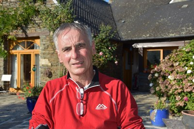
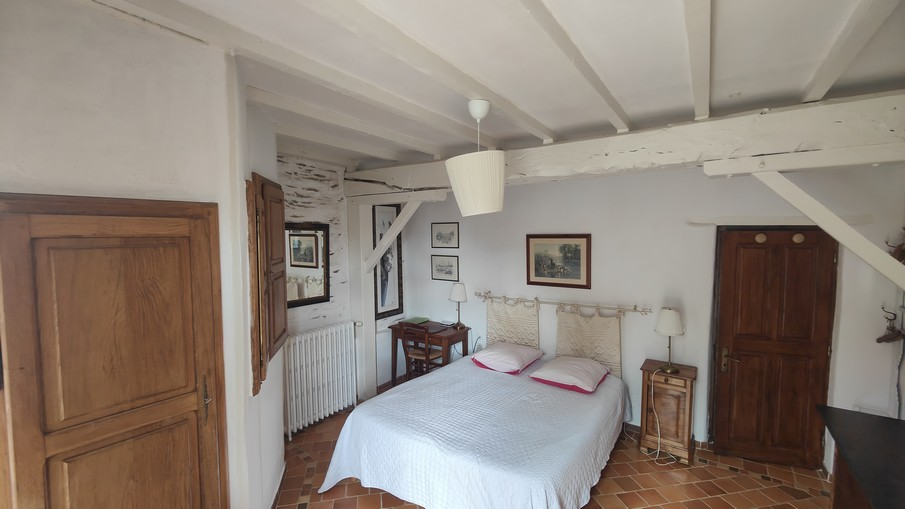

La habitación familiar
El gran atractivo de nuestra casa es su habitación familiar de 60 m², donde pueden dormir hasta seis personas, con soluciones de descanso originales: cama con dosel y alcoba.
Les Fougerêts — sur de Bretaña
Nuestra casa de huéspedes está situada en el sur de Bretaña, en el valle del Oust, en pleno campo, a 50 km de Vannes. Un parque de una hectárea con animales y una zona de juegos hará las delicias de los niños.
Un paraje protegido
Nos encontramos en un paraje protegido de 19 km, el gran espacio natural del valle del Oust, en el interior del sur de Bretaña. El río Oust serpentea entre escarpados acantilados de granito, marismas, bosques y arboledas antes de unirse al canal de Nantes a Brest.
La belleza de este paisaje favorece numerosas actividades turísticas en torno a pueblos con carácter como La Gacilly, Rochefort en Terre, Malestroit o el bosque de Brocéliande, corazón de las leyendas artúricas, cerca de Paimpont. Este breve repaso no estaría completo sin mencionar la comarca de Redon. Redon es una pequeña ciudad rodeada de marismas con un puerto deportivo que le da un encanto especial, posible gracias al río Vilaine, que permite a los barcos llegar al mar a través de la presa de Arzal.
Estamos a 50 minutos de Rennes, a una hora de Nantes, y Vannes y el golfo de Morbihan quedan a tan solo 50 minutos. El lugar más cercano para ver el mar es Damgan, adonde los habitantes de Les Fougerêts suelen acercarse en las grandes mareas.
El puerto más cercano para cruzar el Canal de la Mancha es Saint-Malo, a una hora y media en coche aproximadamente. El aeropuerto de Rennes tiene vuelos desde Londres-Gatwick, Southend, Southampton, Mánchester y otras ciudades, y la estación de Redon está conectada por TGV.
El antiguo pabellón de caza está a 4 km de La Gacilly, conocida por sus talleres de artesanía, la marca de cosmética Yves Rocher y su exposición fotográfica al aire libre.

La propiedad
Mariannig y yo hemos restaurado nuestra casa a lo largo de más de 20 años, respetando el patrimonio arquitectónico bretón e intentando devolverle su encanto de antaño. Solo hemos empleado materiales nobles: roble, cal, terracota y piedra de esquisto.
Alojamiento
Disponemos de dos habitaciones, decoradas y amuebladas con esmero en la más pura tradición bretona, cada una con su propio baño privado con aseo.
El gran atractivo de nuestra casa es su habitación familiar de 60 m², donde pueden dormir hasta seis personas, con soluciones de descanso originales: cama con dosel y alcoba.

La otra habitación tiene también su propio encanto: una habitación doble de 20 m² con una cama de 160, tipo «queen size».
La wifi está disponible en toda la casa, de acceso libre. En cada habitación, además de un expositor en el vestíbulo de entrada, encontrará una carpeta con todas las actividades turísticas de la zona.
La finca
Un parque ajardinado de una hectárea, juegos al aire libre y animales harán las delicias de los niños con total seguridad. Tenemos 6 cabras, gallinas, patos y algunas aves ornamentales, y un estanque con peces de colores y carpas…
Un porche acristalado equipado de 35 m². Esta sala hace las veces de salón, donde podrá leer o ver la televisión con total tranquilidad.
Un desayuno abundante, compuesto principalmente por productos de elaboración propia (zumo de manzana, mermeladas, crepes), acompañado de una pequeña especialidad local que le dejamos descubrir durante su estancia.
Opiniones de los huéspedes
«Muy buena acogida, en un ambiente cálido y agradable. Un anfitrión muy atento, desayuno excelente, habitación muy bonita y tranquila.»
«La habitación era muy cómoda y nos esperaba un delicioso desayuno con crepes caseras y una deliciosa mermelada de manzana.»
«Enclavada en un rincón verde de Bretaña, esta casa de huéspedes es realmente recomendable. Recibimiento perfecto, desayuno excelente y abundante.»
Asociación
Ha nacido una asociación llamada Peuples en Images («Pueblos en Imágenes»), fruto de mi pasión por el documental desde hace más de 30 años. Haga clic en el triángulo para verlos.
Descubra nuestro canal de YoutubePrecios
Hablamos inglés, español y rumano.